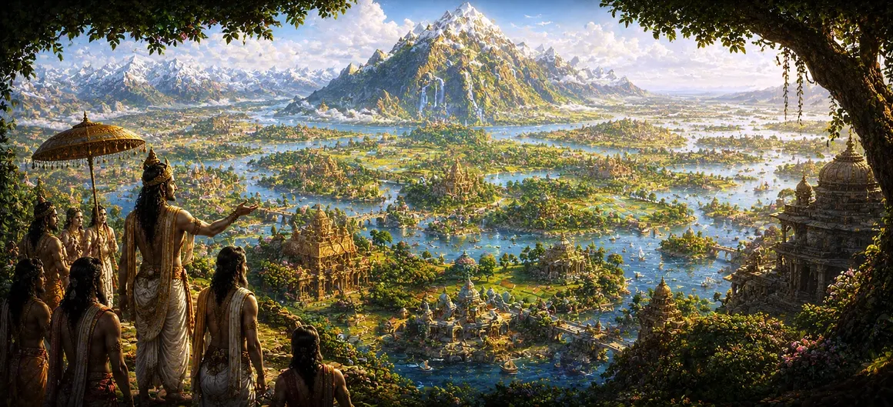

जम्बूद्वीप की पवित्र भूमि
कर्म मुक्ति और आध्यात्मिक मुक्ति के आंतरिक क्षेत्रों से बाहर की ओर बढ़ते हुए, उमा संहिता का अध्याय 17 अपना मुख्य ध्यान केंद्रित करता है जम्बूद्वीप महात्म्य-पौराणिक ब्रह्मांडीय भूगोल में केंद्रीय स्थलीय महाद्वीप की विस्तृत खोज। सांसारिक विमान के केंद्र बिंदु के रूप में, जम्बूद्वीप सर्वोच्च महत्व रखता है, प्राथमिक क्षेत्र के रूप में कार्य करता है जहां मनुष्य भगवान शिव की निगरानी में कर्तव्य, भक्ति, तपस्या और मुक्ति की जानबूझकर खोज में संलग्न होते हैं।
यह अध्याय जम्बूद्वीप की शानदार स्थलाकृति को उजागर करता है, इसके विशाल सीमा पर्वतों, जीवन-पोषक नदी प्रणालियों और विशिष्ट क्षेत्रीय प्रभागों (वर्षों) का विवरण देता है। इससे पता चलता है कि कैसे भौतिक भूगोल आध्यात्मिक विकास के साथ गहराई से जुड़ा हुआ है, जो इस महाद्वीप को धार्मिक जीवन और दिव्य प्राप्ति के लिए अंतिम क्रूसिबल के रूप में स्थापित करता है।
जम्बूद्वीप की भव्यता के स्तंभ
राजसी सीमा पर्वत
विशाल महाद्वीप को विभाजित करने वाली हिमावत, हेमकुटा और निषध जैसी ऊंची पर्वतमालाएं हैं।
पवित्र नदी प्रणालियाँ
उपजाऊ भूमि और पारिस्थितिकी तंत्र को पोषित करने के लिए दिव्य ऊंचाइयों से बहने वाली जीवनरक्षक नदियाँ।
नौ वर्ष
अलग-अलग उपमहाद्वीपों में अद्वितीय वातावरण और आध्यात्मिक आबादी है।
कर्म-भूमि स्थिति
प्राथमिक क्षेत्र के रूप में मान्यता प्राप्त है जहां जानबूझकर की गई कार्रवाई आध्यात्मिक योग्यता उत्पन्न करती है।
जम्बू वृक्ष का प्रतीकवाद
महाद्वीप को परिभाषित करने वाला और अमरता का मीठा फल देने वाला पौराणिक ब्रह्मांडीय वृक्ष।
दिव्य पवित्रीकरण
संपूर्ण भूमि मंदिरों, आश्रमों और शिव की शाश्वत उपस्थिति से पवित्र हो गई।
इस पाठ में मुख्य विषय
जम्बूद्वीप की केन्द्रीय स्थिति एवं अर्थ
यह खंड जम्बूद्वीप को सांसारिक डिस्क के केंद्र में स्थित प्रमुख महाद्वीप के रूप में प्रस्तुत करता है। इसका नाम इसके उत्तरी छोर पर स्थित शानदार जम्बू वृक्ष के नाम पर रखा गया है, जिसके विशाल फल भूमि को मीठे रस से पोषित करते हैं, इस महाद्वीप की असाधारण आध्यात्मिक शक्ति और पर्यावरण संतुलन के लिए प्रशंसा की जाती है।
पूरी तरह से स्वचालित आनंद या स्वचालित पीड़ा द्वारा शासित अन्य क्षेत्रों के विपरीत, जम्बूद्वीप को सचेत नैतिक विकल्प की अनुमति देने के लिए विशिष्ट रूप से संरचित किया गया है, जो इसे आध्यात्मिक विकास और दिव्य संरेखण का आधार बनाता है।
विशाल पर्वत श्रृंखलाएँ और नौ वर्षाएँ
ग्रंथ में जम्बूद्वीप के भव्य भूवैज्ञानिक लेआउट का विवरण दिया गया है, जो पूर्व से पश्चिम तक फैली विशाल पर्वत श्रृंखलाओं द्वारा नौ अलग-अलग क्षेत्रों में विभाजित है, जिन्हें वर्ष के रूप में जाना जाता है। इनमें हिमावत, हेमकुता, निषध, मेरु, मंदरा और अन्य खगोलीय चोटियाँ शामिल हैं जो महाद्वीप की ब्रह्मांडीय व्यवस्था को सहारा देती हैं।
प्रत्येक वर्ष की अपनी अलग जलवायु, वनस्पतियां, जीव-जंतु और ऊंचे प्राणियों की आबादी होती है, जो ब्रह्मांडीय कानून के साथ सद्भाव में रहते हैं और स्थलीय परिदृश्य में दिव्य रचना के विभिन्न पहलुओं को दर्शाते हैं।
पवित्र नदियाँ और जीवन-पोषक जल
जम्बूद्वीप की लंबाई और चौड़ाई में अनगिनत पवित्र नदियाँ बहती हैं जो दिव्य जलाशयों और पर्वत की ऊँचाइयों से निकलती हैं। गंगा, सिंधु, यमुना और कई अन्य नदियाँ वर्षा को सिंचित करती हैं, अशुद्धियों को धोती हैं और जीवन के सभी रूपों को बनाए रखती हैं।
उमा संहिता इस बात पर प्रकाश डालती है कि ये पानी केवल भौतिक जलयोजन एजेंट नहीं हैं, बल्कि आध्यात्मिक नलिकाएं हैं जो दिव्य की शुद्ध ऊर्जा को निवासियों की मिट्टी और दिलों में ले जाती हैं।
कर्म के सर्वोच्च क्षेत्र के रूप में भारतवर्ष
जम्बूद्वीप के सभी क्षेत्रों में से, भारतवर्ष को सर्वोच्च माना जाता है कर्म-भूमि- सक्रिय आध्यात्मिक प्रयास की भूमि। यहां, जीवित प्राणी धार्मिक कर्म, तपस्या, त्याग और भगवान शिव के प्रति गहरी भक्ति के माध्यम से पुण्य उत्पन्न करते हैं, संसार से मुक्त होने की क्षमता अर्जित करते हैं।
पाठ इस बात पर जोर देता है कि उच्चतर स्वर्ग में रहने वाले दिव्य प्राणी भी भारतवर्ष में जन्म लेने के लिए उत्सुक हैं, क्योंकि सच्ची मुक्ति केवल सांसारिक अस्तित्व पर आधारित सचेत नैतिक और आध्यात्मिक प्रयास के माध्यम से ही प्राप्त की जा सकती है।
स्थलीय अस्तित्व का आध्यात्मिक महत्व
जम्बूद्वीप के भौगोलिक सर्वेक्षण का समापन करते हुए, उमा संहिता इस पवित्र महाद्वीप के भीतर मानव जन्म के गहन विशेषाधिकार को दर्शाती है। यह साधकों को याद दिलाता है कि भौतिक अस्तित्व भ्रम से परे जाने और दिव्य आत्मा को महसूस करने का एक दुर्लभ और अनमोल अवसर है।
भूमि का सम्मान करके, ब्रह्मांडीय व्यवस्था का सम्मान करके और सभी कार्यों को भगवान शिव की पूजा की ओर निर्देशित करके, जम्बूद्वीप के निवासी ब्रह्मांडीय निर्माण के सर्वोच्च उद्देश्य को पूरा करते हैं।
जम्बूद्वीप से व्यापक सात महाद्वीपों में परिवर्तन
जंबूद्वीप की सर्वोच्च पवित्रता और विस्तृत स्थलाकृति स्थापित करने के बाद, उमा संहिता पृथ्वी के सात महान महाद्वीपों के संपूर्ण ब्रह्मांडीय लेआउट पर ध्यान केंद्रित करते हुए, व्यापक ग्रह प्रणाली में अपने लेंस का विस्तार करने की तैयारी कर रही है।
यह अगले अध्याय के लिए मार्ग प्रशस्त करता है, जहां पवित्र पाठ सार्वभौमिक भूगोल की अपनी लुभावनी खोज को जारी रखता है, जो सर्वोच्च भगवान द्वारा बनाई गई दुनिया की शानदार विविधता को प्रकट करता है।
आध्यात्मिक अंतर्दृष्टि
अध्याय 17 हमें याद दिलाता है कि जम्बूद्वीप, और विशेष रूप से भारतवर्ष, केवल एक भौतिक भूभाग नहीं है, बल्कि आध्यात्मिक जागृति का एक पवित्र क्रूस है। अपने सांसारिक वातावरण की दिव्य पवित्रता को पहचानकर, हम प्रत्येक कार्य को पूजा के कार्य में बदल देते हैं, और अपने जीवन को सर्वोच्च ब्रह्मांडीय सद्भाव के साथ संरेखित करते हैं।
अक्सर पूछे जाने वाले प्रश्न
① पौराणिक ब्रह्मांडीय भूगोल में जम्बूद्वीप क्या है?
जंबूद्वीप सांसारिक क्षेत्रों में केंद्रीय और सबसे महत्वपूर्ण महाद्वीप है, जो आध्यात्मिक अभ्यास, धार्मिक जीवन और भक्ति के लिए प्राथमिक क्षेत्र के रूप में प्रसिद्ध है।
② जम्बूद्वीप को अन्य क्षेत्रों की तुलना में विशिष्ट रूप से पवित्र क्यों माना जाता है?
इसे कर्म-भूमि, सक्रिय प्रयास की भूमि के रूप में नामित किया गया है जहां मनुष्य धार्मिक कार्य कर सकते हैं, तपस्या कर सकते हैं और परम मुक्ति प्राप्त कर सकते हैं।
③ उमा संहिता में जम्बूद्वीप को कौन सी भौगोलिक विशेषताएँ परिभाषित करती हैं?
जम्बूद्वीप को विशाल सीमावर्ती पर्वतों, पवित्र नदी प्रणालियों, उपजाऊ वर्षा (उपमहाद्वीप) और दैवीय विधान द्वारा निर्मित प्रचुर प्राकृतिक वैभव द्वारा परिभाषित किया गया है।